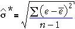

Errors and residuals
We observed earlier that the error, ε, for any data point is its vertical distance from the regression line.
In practice, the slope and intercept of the regression line are unknown, so the errors are also unknown values. However just as the least squares line gives estimates of β0 and β1, the least squares residuals provide estimates of the unknown errors.
| The residuals are therefore estimates of the unknown errors. |
Estimating the error standard deviation
The third unknown parameter of the normal linear model, σ, is the standard deviation of the errors,
σ = st devn ( ε )
A sensible estimate of σ is therefore the sample standard deviation of the residuals,

It can be proved mathematically that the least squares residuals always have mean zero, so this formula is equivalent to

Unfortunately, this estimate tends to be a little too low, and a better estimate is

Volume of wood from trees
The value of a hardwood tree depends on the volume of timber that can be harvested from it. However the volume of timber cannot be measured easily before a tree is cut down, so forestry managers must estimate it from other measurements that are easier to make. A common measurement is the diameter of the tree at breast height, 4.5 feet above ground level. Data were obtained from 31 black cherry trees that were harvested in the Allegheny National Forest in Pennsylvania. The volume of timber (cubic feet) is plotted against the area at breast height (square inches, determined from the diameter).
The residuals from the grey line on the scatterplot are shown in a jittered dot plot on the right. Drag the line (by moving the red arrows) to make the residuals small.
Click Least squares to show the least squares line (and hence the best estimates of β0 and β1). The best estimate of σ is found from the least squares residuals and is shown on the bottom right.